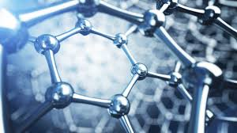

There are many fields in computing which interest me. The main interests I have are in Artificial Intellegence, Electronics, Space, Biotechnology, Nanotechnology and Renewable Energy. I would love to work in one of these fields but am still not sure which I enjoy most. I have an interest in most fields in computing and would love to be able to work with any of these computer fields.
I am mainly interested in Artificial Intellegence in the field of computing because of the possibilities it has. With the development of AI we could see an increase in the development of technologies that help people and could possibly lead to big discoveries. Because of this, AI scares me but also interests me so much. I see the potential for AI to be a beneficial technology to our society but it also poses a threat because of the power the person who possesses it has.
Electronics has always been a field I would love to go into with computing. I would either love to work with hardware or software or continue electronics as a hobby.
Space and AI are definitely the two fields I am most interested in working with in the future with computing. Space has always made me curious of what is out in other planets.
Nanotechnolgy is another great field which has many benefits. With developments in Nanotechnology we could build better solar cells and become closer to renewable energy. This is another great field I would love to work in.
My goal in the future after getting my degree at UTS would be to either work for a company such as Google or Nasa or create my own company which would specialise in AI.
My goal would one day be able to work for a company such as Google or possibly have my own business like Google.
Nasa interests me very much as i've always had an interest in space. I would enjoy working in computing with space and working for a company such as Nasa or SpaceX.
I have always wanted to have my own company which specialises in AI. If i were to have my own company it would be called TreeTech and it would specialise in AI and